전자기기기능사 (2011-07-31 기출문제)
1과목: 전기전자공학
1. 전압 변동률을 나타내는 식은? (단, Vo : 무부하시 정류기의 출력 단자전압, VL : 부하 시 정류기의 출력 단자전압임)
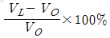
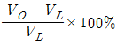
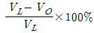
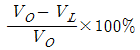
(정답률: 62%)

2. 전동기에서 전기자에 흐르는 전류와 자속, 회전방향의 힘을 나타내는 법칙은?
- 플레밍 오른손 법칙
- 플레밍 왼손 법칙
- 앙페르의 오른손 법칙
- 렌츠의 법칙
(정답률: 81%)
3. 이상적인 상태에서 100% 변조된 AM파는 무변조파에 비하여 출력이 몇 배로 되는가?
- 1
- 1.5
- 2
- 100
(정답률: 48%)
4. 교류의 최대치가 Vm일 때 전파정류회로의 무부하 시 직류출력(평균) 전압 값은 얼마인가?
- Vm/√2
- Vm/2
- Vm/π
- (2Vm)/π
(정답률: 51%)
5. 다음 정류 출력에서 맥동(ripple) 파형 내에 포함된 고조파 성분의 진폭을 감소시키기 위해 사용되는 회로는?
- 평활회로
- 정류회로
- 전원회로
- 증폭회로
(정답률: 66%)
6. RC 결합 증폭회로의 특징으로 적합하지 않은 것은?
- 효율이 매우 높다.
- 회로가 간단하고 경제적이다.
- 직류신호를 증폭할 수 없다.
- 입력임피던스가 낮고 출력임피던스가 높으므로 임피던스정합이 어렵다.
(정답률: 30%)
7. 기전력 1.5[V], 내부저항 0.1[Ω]인 전지 3개를 직렬로 연결하고 이를 단락하였을 때 단락전류는 몇 [A]인가?
- 12.5
- 15
- 17.5
- 20
(정답률: 60%)
8. 다음 중 CdS 소자의 설명으로 가장 적합한 것은?
- 전압에 의하여 전기 저항이 변화한다.
- 온도에 의하여 저항이 변화한다.
- 전압 안정화 회로에 사용한다.
- 빛에 의하여 전기 저항이 변화한다.
(정답률: 68%)
9. 증폭기에서 잡음지수가 얼마일 때 가장 이상적인가?
- 0
- 1
- 10
- 무한대
(정답률: 82%)
10. 그림은 정전압회로의 예이다. TR2의 역할은?
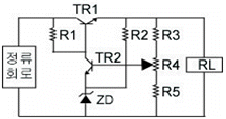
- 제어용
- 증폭용
- 비교부용
- 기준부용
(정답률: 57%)
11. 연산증폭기의 정확도를 높이기 위한 조건으로 적합하지 않은 것은?
- 높은 안정도가 필요하다.
- 좋은 차단 특성을 가져야 한다.
- 증폭도는 가능한 한 작아야 한다.
- 많은 양의 부궤환을 안정하게 걸 수 있어야 한다.
(정답률: 78%)
12. 도체의 저항을 고주파에서 측정하면 저주파에서 측정한 것보다 높은 값을 표시하는 이유로 가장 적합한 것은?
- 피에조효과
- 밀러효과
- 전계효과
- 표피효과
(정답률: 51%)
13. 다음 그림의 회로에서 합성저항은 몇 [Ω]인가?
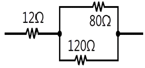
- 20
- 40
- 60
- 80
(정답률: 72%)
14. B급 푸시풀(Push-pull) 증폭기의 장점이 아닌 것은?
- 효율이 A급보다 좋다.
- 출력 변압기의 철심이 적어도 된다.
- 출력에 우수 고조파가 포함되지 않는다.
- 크로스 오버(cross over) 찌그러짐이 생기지 않는다.
(정답률: 64%)
15. 트랜지스터가 정상적으로 증폭작용을 하는 영역은?
- 활성영역
- 포화영역
- 항복영역
- 차단영역
(정답률: 83%)
2과목: 전자계산기일반
16. LC 발진기에서 일어나기 쉬운 이상 현상이 아닌 것은?
- blocking 현상
- 기생 진동(parasitic oscillator)
- 자왜(磁歪)현상
- 인입 현상(pull-in phenomenon)
(정답률: 78%)
17. 컴퓨터의 중앙처리장치(CPU) 내부에서 기억 장치내의 정보를 호출하기 위해 그 주소를 기억하고 있는 제어용 레지스터는?
- 상태 레지스터
- 프로그램 카운터
- 메모리 주소 레지스터
- 스택 포인터
(정답률: 56%)
18. 패리티 비트(parity bit)의 사용 목적은?
- 에러(error) 정정
- 에러(error) 검사
- 데이터 전송
- 데이터 수신
(정답률: 78%)
19. 주기억장치를 보조기억장치와 비교 설명한 것으로 틀린 것은?
- CPU가 간접 접근한다.
- 데이터를 직접 처리한다.
- 접근시간이 빠르다.
- 구입 단가가 높다.
(정답률: 56%)
20. 순서도를 작성하는 일반적인 규칙이 아닌 것은?
- 약속된 표준 기호를 사용한다.
- 흐름에 따라 오른쪽에서 왼쪽으로 그린다.
- 기호 내부에 처리 내용을 간단, 명료하게 기술한다.
- 한 면에 다 그릴 수 없거나 연속적인 표현이 어려울 때는 연결 기호를 사용한다.
(정답률: 83%)
21. 마이크로프로세서를 이용하여 회로를 설계할 때 생기는 장점이 아닌 것은?
- 소비전력의 증가
- 제품의 소형화
- 시스템 신뢰성 향상
- 부품의 수량 감소
(정답률: 77%)
22. 정보를 중앙처리장치에서 기억장치로 기억시키는 것을 무엇이라 하는가?
- load
- store
- fetch
- transfer
(정답률: 77%)
23. 10진수 234에 대한 9의 보수로 옳게 변환한 것은?
- 764
- 765
- 766
- 777
(정답률: 64%)
24. 디코더(decoder)는 일반적으로 어떤 게이트를 사용하여 만들 수 있는가?
- NAND, NOR
- AND, NOT
- OR, NOR
- NOT, NAND
(정답률: 75%)
25. 주소지정방식 중 명령어의 피연산자 부분에 데이터의 값을 저장하는 방식은?
- 즉시 주소지정방식
- 절대 주소지정방식
- 상대 주소지정방식
- 간접 주소지정방식
(정답률: 57%)
26. 클록펄스가 인가되면 입력신호가 그대로 출력에 나타나고, 클록펄스가 없으면 출력은 현 상태를 그대로 유지하는 플립플롭은?
- RS 플립플롭
- JK 플립플롭
- D 플립플롭
- T 플립플롭
(정답률: 51%)
27. 컴파일러형 언어의 설명으로 틀린 것은?
- 원시 프로그램의 수정 없이 계속 반복 수행하는 응용시스템에서 효율적이다.
- FORTRAN, COBOL, C, 어셈블리어 등이 있다.
- 목적 프로그램을 만든지 않는다.
- 고급언어와 관련된 번역 프로그램이다.
(정답률: 68%)
28. 마이크로프로세서의 구성 요소가 아닌 것은?
- 누산기
- 연산장치
- 입력장치
- 레지스터
(정답률: 62%)
29. 다음 중 디지털 전압계의 원리는 어는 것과 가장 유사한가?
- A/D 변환기
- D/A 변환기
- 계수기
- 분압기
(정답률: 76%)
30. 수신기의 감도 측정 시 필요하지 않는 것은?
- 표준신호발생기
- 의사공중선
- VTVM
- 분압기
(정답률: 53%)
3과목: 전자측정
31. 측정자의 눈금오독 또는 부주의로 발생하는 오차는?
- 과실 오차
- 이론적 오차
- 개인적 오차
- 우연 오차
(정답률: 50%)
32. 다음 중 가장 높은 주파수를 측정 할 수 있는 계기는?
- 흡수형 주파수계
- 딥미터(dip miter)
- 헤테로다인 주파수계
- 동축형 주파수계
(정답률: 77%)
33. 그림과 같은 파형이 오실로스코프에 나타났을 때 위상은 어떻게 되는가?
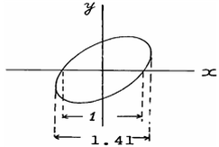
- 동위상
- 45°
- 90°
- 180°
(정답률: 69%)
34. 지시계기의 구성요소 중 제동장치에 속하지 않는 것은?
- 공기 제동
- 액체 제동
- 맴돌이 전류 제동
- 중력 제동
(정답률: 52%)
35. 표준신호발생기가 갖추어야 할 조건 중 옳지 않은 것은?
- 변조도가 정확하게 조정될 수 있을 것
- 주파수가 정확하고, 가변 범위가 넓을 것
- 출력이 고정되어 정확한 값을 알 수 있을 것
- 차폐가 완전하고, 출력단자 이외에서 전자파가 누설 되지 않을 것
(정답률: 49%)
36. 다음 그림에서 측정 범위를 5배로 하기 위한 배율기의 저항값은?
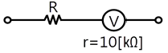
- 2.5[KΩ]
- 25[KΩ]
- 30[KΩ]
- 40[KΩ]
(정답률: 47%)
37. 다음 보기의 계기와 관련 있는 것은?
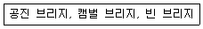
- 상용 주파수 측정
- 반송 주파수 측정
- 고주파수 측정
- 가청 주파수 측정
(정답률: 66%)
38. 유도형 적산 전력계의 구동 토크는?
- 저항에 비례한다.
- 전류에 비례한다.
- 전류 자승에 비례한다.
- 전압 자승에 비례한다.
(정답률: 56%)
39. Wien Bridge는 무엇을 측정하는데 사용하는가?
- 정전용량
- 인덕턴스
- 임피던스
- 역률
(정답률: 51%)
40. LED의 극성을 측정하기 위하여 LED의 양 리드단자에 회로 시험기의 테스트 봉을 교대로 접속했을 때의 설명으로 옳은 것은?
- 한쪽 방향에서는 LED가 점등되고, 다른 방향에서는 소등되면 정상적인 LED이다.
- 한쪽 방향에서는 LED가 점등되고, 다른 방향에서도 점등되면 정상적인 LED이다.
- 한쪽 방향에서 LED가 소등되고, 다른 방향에서도 소등되면 정상적인 LED이다.
- 회로시험기로는 LED의 극성을 판별할 수 없다.
(정답률: 72%)
41. 온도의 예정 한도를 검출하는데 사용되는 것은?
- 레벨미터(level meter)
- 서모스탯(thermostat)
- 리밋스위치(limit switch)
- 압력스위치(pressure switch)
(정답률: 71%)
42. 다음 중 압력을 변위로 변환하는 것은?
- 스프링
- 전자코일
- 전자석
- 유도형 변환기
(정답률: 83%)
43. 다음은 자동제어계의 블록선도이다. 빈칸에 알맞은 것은?
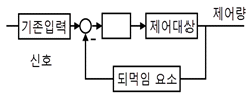
- 제어요소
- 동작요소
- 외란
- 오차
(정답률: 63%)
44. 비스므스(Bi)와 안티몬(Sb)을 접합하여 전류를 흘리면 접촉점에서 흡열 또는 발열 현상이 일어난다. 다음 중 이와 관계있는 것은?
- 줄 효과(Joule effect)
- 핀치 효과(Pinch effect)
- 톰슨 효과(Thomson effect)
- 펠티어 효과(Peltier effect)
(정답률: 75%)
45. 중음 재생을 전용으로 하는 스피커는?
- 우퍼(woofer)
- 스쿼커(squawker)
- 트위터(tweeter)
- 혼스피커
(정답률: 61%)
4과목: 전자기기 및 음향영상기기
46. 고주파 유도가열에 해당하는 것은?
- 금속 표면의 가열
- 음식물 조리
- 목재의 접착
- 합성수지의 접착
(정답률: 66%)
47. 자동제어 조절계의 제어 동작에서 D 동작은?
- 온·오프동작
- 비례동작
- 비례적분동작
- 미분동작
(정답률: 53%)
48. 동축 케이블(TV수신용 급전선)에 관한 설명으로 옳지 않은 것은?
- 특성 임피던스가 약 75Ω의 것이 많다.
- 고스트가 많은 시가지에 적합하다.
- 광대역 전송이 불가능하다.
- 평행2선식 피더보다 외부로부터의 방해를 잘 받지 않는다.
(정답률: 67%)
49. VTR용 Head의 자성재료에 요구되는 특성으로 옳지 않은 것은?
- 실효 투자율이 높을 것
- 가공성이 좋을 것
- 미모성이 클 것
- 잡음발생이 적을 것
(정답률: 80%)
50. 컬러킬러(color killer) 회로에 대한 설명으로 옳은 것은?
- 컬러 화면에 나오는 색 잡음을 없애는 것이다.
- 컬러 화면을 흑백 화면으로 전환시키는 것이다.
- 강한 컬러를 부드럽게 하는 일종의 색 콘트라스트이다.
- 흑백 방송 수신시에 색 노이즈가 화면에 나오는 것을 방지하는 것이다.
(정답률: 60%)
51. 녹음기 회로에서 녹음 시는 고역을, 재생 시는 저역을 각각의 증폭기로 보정하여 전체를 통하여 평탄한 특성으로 만드는 것은?
- 등화
- 증폭기
- 임펄스
- 진폭제한기
(정답률: 69%)
52. 초음파 측심기로 수심을 측정하고자 초음파를 발사하였다. 이 때 물의 깊이(h)를 계산하는 식은 어떻게 되는가? (단, 물속에서의 초음파 속도는 v[m/s], 초음파가 발사된 후 다시 돌아올 때까지의 시간은 t[sec]이다.)
- h=(vt)/2[m]
- h=vt[m]
- h=2vt[m]
- h=2/(vt)[m]
(정답률: 72%)
53. 증폭회로에 1[mW]를 공급하였을 때 출력으로 1[W]가 얻어졌다면, 이때 이득은?
- 10[dB]
- 20[dB]
- 30[dB]
- 40[dB]
(정답률: 45%)
54. 일반적으로 슈퍼헤테로다인 수신기에서 주파수 변환회로의 이상적인 변환 이득은?
- 낮을수록 좋다.
- 클수록 좋다.
- 중간 정도가 좋다.
- 별 관계가 없다.
(정답률: 74%)
55. 무지향성 비컨, 호밍 비컨은 어떤 전파 항법 방식을 사용 하는 것인가?
- ρ-θ 항법
- 극좌표 항법
- 방사성 항법
- 쌍곡선 항법
(정답률: 68%)
56. 다음 중 자동제어의 되먹임 제어에서 반드시 필요한 장치는?
- 구동하는 모터
- 안정도를 좋게 하는 장치
- 입력과 출력을 비교하는 장치
- 응답 속도를 빠르게 하는 장치
(정답률: 54%)
57. 다음 그림은 VHS 방식 카세트테이프의 후면 모양이다. 구멍 H의 역할은?
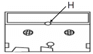
- 릴 브레이크 해제
- 종단 검출용 램프 장착
- 오소거 방지
- 테이프 사용시간 구분
(정답률: 77%)
58. 테이프 리코더(tape recorder) 구성에서 데이프의 운동을 조절하며, 일정한 속도로 회전하는 축을 무엇이라고 하는가?
- 핀치 롤러
- 테이프 가드
- 플라이 휠
- 캡스턴
(정답률: 66%)
59. 납땜이 잘되지 않는 알루미늄의 납땜에 이용되는 초음파의 성질은?
- 초음파 응집
- 초음파 굴절
- 초음파 탐상
- 초음파 진동
(정답률: 58%)
60. 다음 마이크로폰의 종류 중 쌍지향성을 갖는 것은?
- 가동코일형
- 리본형
- 크리스탈형
- 콘덴서형
(정답률: 57%)